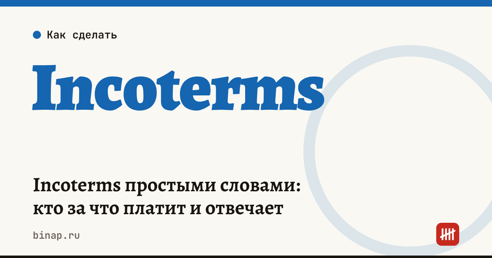

Incoterms простыми словами: кто за что платит и отвечает

Incoterms — правила Международной торговой палаты (ICC), которые одной аббревиатурой отвечают на три вопроса: кто платит за доставку, кто отвечает за товар в пути и в какой момент риск переходит от продавца к покупателю. Действующая редакция — Incoterms 2020. Для импортёра от выбранного базиса зависит, какие расходы добавятся к цене поставщика и что именно попадёт в таможенную стоимость.
Коротко
- Базис указывают в контракте вместе с местом: например, «FOB Шанхай, Incoterms 2020».
- 11 терминов: от EXW (всё делает покупатель) до DDP (всё, включая ввозные платежи, делает продавец).
- Incoterms не определяют, когда переходит право собственности, и не заменяют договор — это делают условия контракта.
- Чем меньше делает продавец, тем ниже цена в инвойсе, но тем больше расходов и рисков у вас.
- Себестоимость партии считайте от базиса: доставку, страховку и пошлину, которые не входят в цену, добавляйте сами.
Сроки, изменения и разборы для ИП и самозанятых — каждое утро в Telegram и MAX. Подпишитесь, чтобы не пропустить.
Основные термины
| Термин | Что делает продавец | Где риск переходит на покупателя |
|---|---|---|
| EXW (франко-завод) | готовит товар на своём складе | на складе продавца |
| FCA (франко-перевозчик) | передаёт товар перевозчику покупателя, оформляет экспорт | в момент передачи перевозчику |
| FOB (франко-борт) | грузит товар на судно в порту отправления | на борту судна в порту отправления |
| CFR и CIF | оплачивает морскую перевозку до порта назначения, по CIF — ещё и страховку | на борту судна в порту отправления |
| CPT и CIP | оплачивает перевозку до места назначения, по CIP — ещё и страховку | при передаче первому перевозчику |
| DAP | доставляет до места назначения, без разгрузки и ввозных платежей | в месте назначения |
| DPU | доставляет и разгружает в месте назначения | после разгрузки |
| DDP | доставляет, платит ввозную пошлину и налоги | в месте назначения |
Важная ловушка: по CIF и CPT продавец оплачивает доставку до порта или города назначения, но риск переходит на вас уже в стране отправления. Если груз повредят в пути, претензию к страховщику или перевозчику предъявляете вы.
Пример: одна партия на разных базисах
Расчёт редакции на условных цифрах. Поставщик предлагает партию за 10 000 $ на условиях EXW. Морская перевозка до порта в России — 1 800 $, доставка до порта в Китае и экспортное оформление — 400 $, страховка — 50 $.
| Базис | Что включено в цену поставщика | Что вы оплачиваете отдельно до прибытия в порт РФ |
|---|---|---|
| EXW | только товар | 400 + 1 800 + 50 = 2 250 $ |
| FOB | товар, доставка до порта и погрузка | 1 800 + 50 = 1 850 $ |
| CIF | товар, фрахт и страховка | 0 $ |
Сравнивайте предложения поставщиков только на одном базисе: цена «CIF» на 2 000 $ выше цены «EXW» может оказаться выгоднее, если ваша логистика стоит дороже. Дальше к любой цене добавляются пошлина, НДС при ввозе, брокер и доставка до склада — полный расчёт в статье Себестоимость импортного товара: расчёт и в калькуляторе себестоимости импорта.
Что проверить в контракте
- Базис, место и редакцию: «FCA Гуанчжоу, склад продавца, Incoterms 2020», а не просто «FCA».
- Кто оформляет экспорт в стране продавца — по EXW это обязанность покупателя, что неудобно для России.
- Страховку: по CIF продавец обязан застраховать груз только на минимальных условиях — уточните, нужна ли расширенная.
- Валюту и сроки оплаты — от них зависят валютный контроль и курсовые риски: валютный контроль для ИП, валютные форварды для импортёров. Все материалы — в разделе Импортёрам.
Частые вопросы
Какой базис выгоднее для небольшого импортёра? Часто FCA или FOB: продавец оформляет экспорт у себя, а перевозку вы выбираете сами и контролируете её цену.
Входит ли доставка в таможенную стоимость? По общему правилу в таможенную стоимость включают расходы на доставку до места ввоза в Россию. Поэтому при EXW и FOB их добавляют к цене контракта, а при CIF они уже в цене.
Обязательно ли указывать Incoterms в контракте? Нет, но без них придётся подробно описать распределение расходов и рисков в самом договоре — иначе спор в случае повреждения груза почти гарантирован.